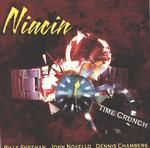

| Artist: | Niacin |
| Title: | Time Crunch |
| Label: | Magna Carta catnr unknown |
| Length(s): | 56 minutes |
| Year(s) of release: | 2001 |
| Month of review: | [03/2002] |
| 1) | Elbow Grease | 5.17 |
| 2) | Time Crunch | 3.13 |
| 3) | Stone Face | 6.09 |
| 4) | Red | 8.00 |
| 5) | Invisible King | 4.27 |
| 6) | Daddy Long Leg | 5.18 |
| 7) | Hog Funk | 5.06 |
| 8) | Glow | 3.05 |
| 9) | Damaged Goods | 4.25 |
| 10) | Outside Inside Out | 5.02 |
| 11) | Blue Wind | 5.51 |
Time Crunch features some organ like in UK's Carrying No Cross. High speed finger breaking stuff. Pretty good.
Stone Face is pounding track that sort of comes in gusts. Beating drums, pushing organ, all instruments perfectly in line. After a peaceful interlude the Face once more moves into top gear. The abrupt end of the track seems to suggest a wall or some such was encountered.
Red is what you think it is: a cover of the King Crimson track. Sounds nice. Of course it does, it's vintage KC, but I can't find anything that makes this rendition an addition to the original. The use of instruments differs from the original, but most of all it remains Red.
Invisible King's beginning reminds me somewhat of Dutch acts like Ekseption and Trace, being strongly organ based in a sort of classical way. Gets a bit faster, and features some jazzy piano strokes, but fails to inspire me.
Daddy Long Leg starts a pretty much jazzrocky track, although UK's ghost seems to be present as well. Daddy slowly moves from a pretty much jazzy idiom, towards a more rocky one, helping it nicely along.
Hog Funk has most of its funk in the title. Pretty good track, but not all that striking, sort of floating by.
Glow is a much slower piano based track, not unlike some Keith Jarrett material (without the sound effects). Pretty nice.
Damaged Goods takes the speed to more normal levels again. Moving along though, the longer held hammond notes give the track sort of a different quality.
Outside Inside Out has the Hammond at the one moment in a basic mode, and then flaring up, the way flames would.
Blue Wind is a cover of a Jam Hammer track, that doesn't exactly come to mind. It starts with a pretty basic jazzrocky feel, enhanced by a bass fighting strangulation. Moving along the track becomes more and more chaotic and cacofonic, but pretty good still.